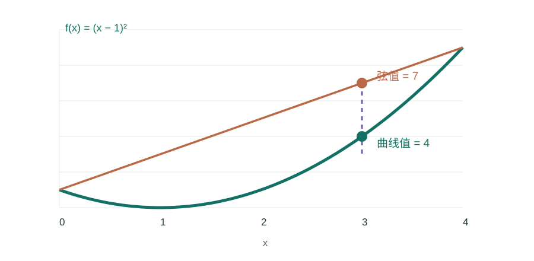

凸性：为什么局部最优可以变成全局最优
凸性把局部几何与全局保证连接起来。观察一条曲线与两端点之间的弦，理解为什么凸优化允许可靠的全局最优性判断。
看曲线与弦之间的关系
考虑 f(x)=(x−1)²。任意挑两个输入点，把它们连成一条直线；曲线上两点之间的函数值不会高于这条弦对应的高度。这正是凸函数最直观的几何特征。

什么是凸集
一个集合 C 是凸集，意味着任意两点 a、b∈C 之间的全部线段都在 C 内。实数上的区间、欧氏空间中的球、半空间是典型例子；中间挖洞的环形区域通常不是凸集。
优化里还需要注意定义域。讨论函数在 C 上是否凸，首先要求 C 本身为凸集；否则两点之间的插值可能连函数都没有定义。
凸函数的不等式
给定凸定义域 C，函数 f 是凸的，当且仅当任意 a、b∈C 与 θ∈[0,1] 满足下式。左侧是插值处的函数值，右侧是端点函数值按相同权重得到的弦上高度。
对于 f(x)=(x−1)²，取 a=0、b=4、θ=1/4。插值点 x=3，左侧 f(3)=4，右侧 1/4·f(0)+3/4·f(4)=7。差 3≥0，符合凸性。对所有 θ∈[0,1]，差恰好是 16θ(1−θ)，因此始终非负。
导数与 Hessian 判别
如果一元函数在开区间内二次连续可微，f''(x)≥0 对全部 x 成立，与凸性等价。多维情况下，若函数在开凸域内二次连续可微，Hessian 对所有点均为半正定，就是凸性的充分必要条件。
本例 f''(x)=2>0，因此严格凸；并且在实数域上有唯一最小点 x=1。注意严格凸不要求每个点的 Hessian 都正定，例如 x⁴ 严格凸，但在零点的二阶导数为零。
从局部极小到全局极小
若目标 f 凸且可行域 C 也是凸集，任何局部极小点都是全局极小点。理由是：若存在更好的远处点 y，连接当前候选点 x 和 y 的线段仍可行；凸性保证沿着这条线段刚离开 x 的点就能改善目标，与局部最优矛盾。
严格凸意味着若最小点存在则至多一个，但并不保证存在。例如 eˣ 在整个实数轴上严格凸，函数值始终大于零，却只无限接近零，不会取得最小值。
凸优化并不是“所有约束问题都容易”，而是给予可利用的全局结构。不能仅凭目标函数凸就忽略非凸可行域。
移动插值权重 θ
改变 θ，展示曲线值和弦值。端点时二者相等；在区间内部，严格凸二次函数的曲线低于连接端点的弦。
实时计算
端点 a=0，b=4，x=θa+(1−θ)b。
检查不等式并练习
程序对 θ=0,0.01,…,1 进行离散检查，并单独验证 θ=1/4 时的精确值。有限采样不能替代全区间的数学证明；这里的证明来自平方展开。
"""Check the convexity inequality for a quadratic teaching example."""
from math import isclose
def f(x: float) -> float:
return (x - 1.0) ** 2
def chord_gap(theta: float, a: float = 0.0, b: float = 4.0) -> float:
x = theta * a + (1.0 - theta) * b
return theta * f(a) + (1.0 - theta) * f(b) - f(x)
if __name__ == "__main__":
theta = 0.25
x = theta * 0.0 + (1.0 - theta) * 4.0
lhs = f(x)
rhs = theta * f(0.0) + (1.0 - theta) * f(4.0)
print(f"x={x:.2f}, curve={lhs:.2f}, chord={rhs:.2f}, gap={rhs-lhs:.2f}")
assert isclose(x, 3.0)
assert isclose(lhs, 4.0)
assert isclose(rhs, 7.0)
for i in range(101):
assert chord_gap(i / 100.0) >= -1e-12
assert isclose(chord_gap(0.0), 0.0)
assert isclose(chord_gap(1.0), 0.0)
练习：证明非负加权和 αf+βg 在 α,β≥0 且 f、g 均凸时仍凸；再思考如果权重允许负数，结论是否还成立。